Packmate is an AI travel assistant built with React and FastAPI. It combines a shared Llama model with two Model Context Protocol (MCP) tools: one for weather and one for baggage policy.
This workshop follows the same controlled path used by modern platform teams:
RHDP sandbox → OpenShift AI project and Workbench → Playground prototype → DEV application → Tekton validation → immutable GHCR candidate → reviewed pull request → manual Argo CD PROD Sync → verified PROD
You will use two environments:
ENV
Namespace
Purpose
Deployment owner
DEV
packmate-lab
OpenShift AI project, Workbench, Playground assets, Pipeline, and integrated application
Argo CD automatically reconciles Git
PROD
packmate-prod
Runtime application only
Argo CD applies Git only after your manual Sync
WHY THIS MATTERS DEV lets you experiment and validate safely. PROD changes remain reviewable in Git and deliberate in Argo CD.
Before you begin
You need:
access to the Red Hat Demo Platform (RHDP) catalog;
a GitHub account that can create a fork and a GHCR package;
an instructor-provided sandbox activity and console links;
the shared model llama-32-3b-instruct ready in project my-first-model;
a GitHub credential approved for your environment, with access to your fork and permission to write packages.
SECURITY Never put a GitHub token in config/sandbox.env, a shell script, a notebook, workshop notes, screenshots, or Git. Use gh auth login or the hidden prompt provided by make configure-promotion-registry.
How to use checkpoints
EXPECTED RESULT tells you what normal progress looks like.
REQUIRED RESULT must be true before you continue.
REQUIRED EVIDENCE is what you should record for the workshop.
STOP BEFORE CONTINUING means the next module depends on the checkpoint.
MODULE 1 — Order the RHDP sandbox and create the GitHub fork
WHAT YOU WILL COMPLETE Order the assigned OpenShift AI sandbox, open its consoles, and create a participant-owned GitHub fork containing the workshop branch.
WHY THIS MATTERS Your sandbox supplies the platform. Your fork supplies a safe, writable Git history without granting access to the canonical workshop repository.
1.1 Order the sandbox
Sign in to the RHDP catalog URL provided by your instructor.
Find the assigned OpenShift AI sandbox activity.
Click Order and accept the activity terms.
Wait until provisioning is complete.
Save the OpenShift console and OpenShift AI dashboard links from the activity details.
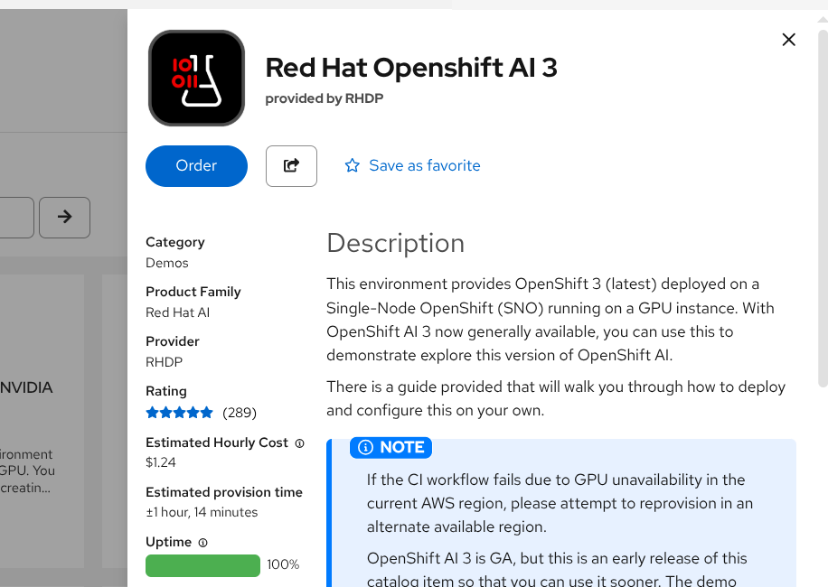
RHDP OpenShift AI 3 catalog activity with the Order control.
EXPECTED RESULT: The activity reports ready and you can open both consoles.
1.2 Confirm your OpenShift identity
Open the OpenShift web terminal supplied by the sandbox, or use an instructor-approved terminal, and run:
BASH
oc whoami
REQUIRED RESULT: The output is your human sandbox username.
STOP BEFORE CONTINUING Do not continue if the output begins with system:serviceaccount:. Run oc logout, sign in again with oc login --web, and repeat oc whoami.
1.3 Fork the repository
Open https://github.com/Lindagh1/packmate-agent.
Click Fork.
Choose your GitHub account as owner.
Turn off Copy the main branch only so the workshop branch is included.
Create the fork.
In your fork, confirm branch packmate-v2 exists.
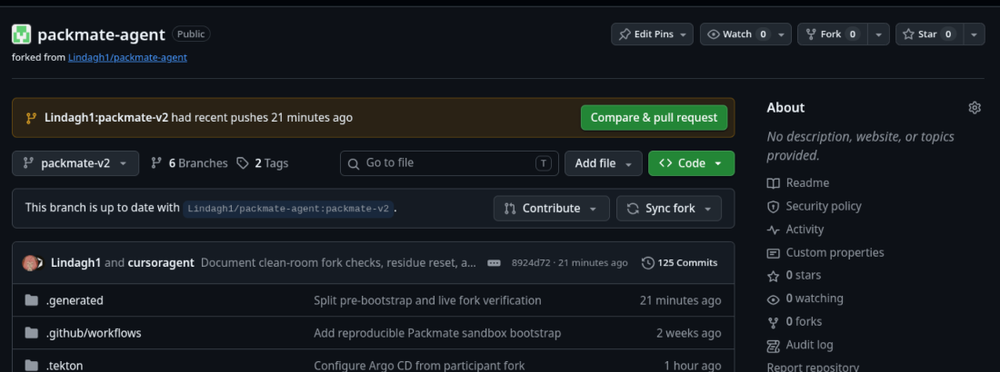
Example participant-owned fork with the packmate-v2 branch selected.
REQUIRED RESULT: Your browser URL is https://github.com/YOUR_USERNAME/packmate-agent, and the branch selector includes packmate-v2.
MODULE 2 — Create the OpenShift AI project and Workbench
WHAT YOU WILL COMPLETE Create the DEV Data Science Project and a code-server Workbench where you will run the workshop commands.
WHY THIS MATTERS An OpenShift AI project groups your AI development resources. A Workbench gives you a browser-based development environment connected to the sandbox.
2.1 Create the DEV project
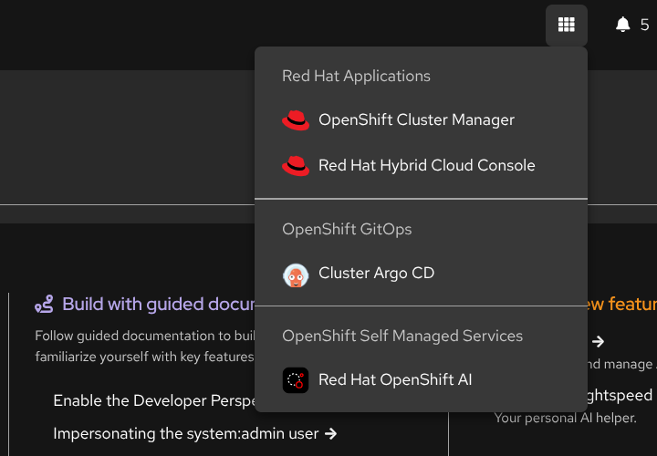
Open Red Hat OpenShift AI from the OpenShift application launcher.
Open the OpenShift AI dashboard.
Select Data Science Projects.
Click Create project.
Enter packmate-lab as the name.
Click Create.
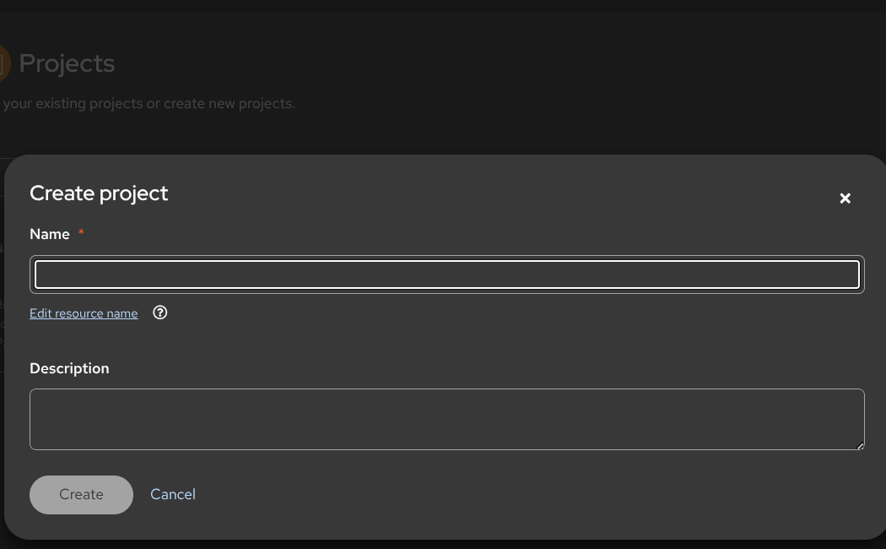
Create project dialog used to enter packmate-lab.
REQUIRED RESULT:packmate-lab appears in Data Science Projects. This project is DEV, not PROD.
2.2 Create the Workbench
Open project packmate-lab.
Select Workbenches → Create workbench.
Name it packmate-workbench.
Choose the instructor-approved code-server image with Python 3.12.
Use the recommended CPU and memory size shown by your instructor.
Click Create workbench and wait for Running.
Click Open.
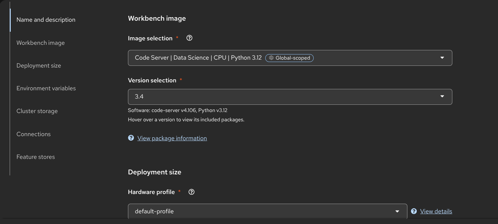
Code Server Python 3.12 image and deployment-size controls for the Packmate Workbench.
EXPECTED RESULT: code-server opens and its Terminal menu is available.
CURRENT SCREENSHOT NEEDED: packmate-workbench Running and ready to open
MODULE 3 — Configure the participant workspace and Git fork
WHAT YOU WILL COMPLETE Clone your fork, configure repository-local participant settings, disable pushes to canonical upstream, and verify fork ownership.
WHY THIS MATTERS Git records the reviewed production change later in the workshop. Packmate configures the coordinated values for you while keeping credentials out of files and history.
3.1 Clone your fork
In the Workbench terminal, replace YOUR_USERNAME once in the clone URL:
BASH
cd /opt/app-root/src
git clone --branch packmate-v2 --single-branch \
https://github.com/YOUR_USERNAME/packmate-agent.git \
packmate-agent
cd packmate-agent
CURRENT SCREENSHOT NEEDED: Repository open in code-server
All remaining terminal commands run from /opt/app-root/src/packmate-agent.
3.2 Configure participant settings
BASH
make configure-participant
make verify-demo-fork
make configure-participant safely:
reads your fork from Git remote origin;
creates the gitignored config/sandbox.env;
coordinates the Git revision and promotion base branch;
sets your GitHub account as the GHCR owner;
adds canonical upstream for fetches and disables pushes to it;
never requests or stores a token.
REQUIRED RESULT: Both commands pass. The summary names your fork, branch packmate-v2, and GHCR owner.
3.3 Configure commit identity
Commit identity is not a login and is not a token. Set it only for this repository:
BASH
PACKMATE_GIT_NAME='Your Name' \
PACKMATE_GIT_EMAIL='you@example.com' \
make configure-git
If your environment provides GitHub CLI, authenticate interactively now:
BASH
gh auth login
Follow the organization-approved browser or device flow. Do not paste the credential into a repository file.
BASH
make verify-github-write-readiness
EXPECTED RESULT: Git identity is repository-local. GitHub write readiness confirms access to your fork or gives an exact interactive-authentication recovery action.
STOP BEFORE CONTINUINGmake verify-demo-fork must not report BLOCKED_CANONICAL_REPOSITORY_PROMOTION.
MODULE 4 — Prepare GitOps, registry access and bootstrap the lab
WHAT YOU WILL COMPLETE Prepare a disposable workshop branch, store GHCR access in OpenShift Secrets, run preflight, bootstrap DEV and GitOps, and leave PROD waiting for a later manual Sync.
WHY THIS MATTERS Automation removes setup plumbing while retaining the important boundaries: fork-owned Git, immutable registry artifacts, Argo CD ownership, and separate DEV/PROD environments.
4.1 Prepare the workshop baseline
BASH
make prepare-demo-baseline
make verify-demo-fork
This repeatable command works only against a validated participant fork. It creates or updates demo/packmate-workshop, pushes the known-good baseline, switches to that branch, and saves matching GIT_REVISION, PROMOTION_BASE_BRANCH, and PACKMATE_DEMO_BRANCH settings automatically.
REQUIRED RESULT: The output includes DEMO_BASELINE_READY, CONFIG_SAVED, and a passing fork check. No manual file edit is required.
4.2 Configure GHCR access
BASH
make configure-promotion-registry
make verify-promotion-registry
If prompted, type your GitHub username and enter the approved package-write token at the hidden prompt. The command creates an OpenShift Secret in packmate-lab; it does not write the credential to config/sandbox.env or Git.
REQUIRED RESULT:packmate-ghcr-push exists in packmate-lab, and registry verification passes.
4.3 Run preflight and bootstrap
BASH
make preflight
make bootstrap
Bootstrap performs the implementation work needed by later modules:
connects a custom Packmate endpoint to the shared Llama model;
registers both MCP servers;
renders Tekton defaults from your fork, branch, and GHCR owner;
gives Argo CD sole ownership of Git-tracked DEV and PROD runtime resources;
automatically reconciles DEV;
prepares the PROD namespace and its non-Git Secrets without deploying PROD.
It does not redeploy the shared model, apply runtime overlays directly, or synchronize PROD.
4.4 Verify the prepared environments
BASH
make verify-dev
make verify-gitops
make verify-demo-fork-live
REQUIRED RESULT:
DEV is Synced and Healthy;
the shared model and both MCP assets are ready;
both Argo CD Applications follow your fork and prepared branch;
PROD automatic synchronization is disabled;
no PROD workload has been manually applied.
STOP BEFORE CONTINUING Resolve every BLOCKED or FAIL result. Optional Rollouts or EvalHub messages do not block this workshop.
MODULE 5 — Prototype in the OpenShift AI Playground
WHAT YOU WILL COMPLETE Configure a Playground chat with the shared Llama endpoint, Packmate system instructions, and both MCP tools; then validate representative AI behavior.
WHY THIS MATTERS The Playground lets you prototype AI behavior before integrating it into the application.
5.1 Confirm the AI assets
In OpenShift AI, open Gen AI studio → AI asset endpoints.
Select project packmate-lab.
Confirm these three assets are present:
Packmate Llama 3.2 3B
Packmate-Weather-MCP
Packmate-Baggage-Policy-MCP
CURRENT SCREENSHOT NEEDED: Packmate Llama model asset in packmate-lab with current readiness state
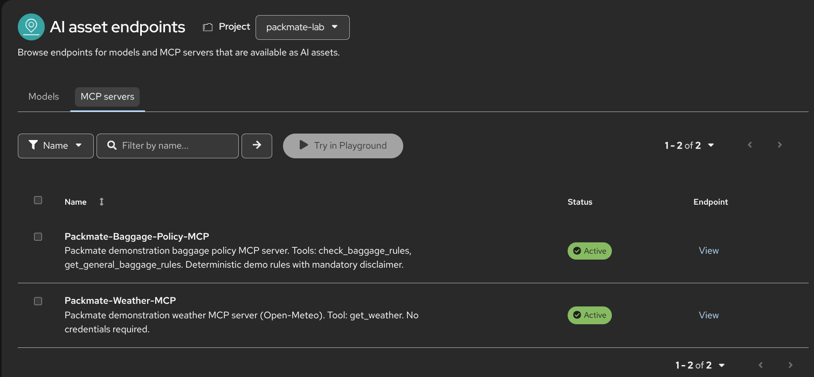
Both active Packmate MCP server assets in project packmate-lab.
The physical model remains in my-first-model. Do not deploy another Llama model in packmate-lab.
5.2 Configure the Playground
In code-server, open playground/system-instructions.md and copy its full contents.
In OpenShift AI, open Gen AI studio → Playground.
Select project packmate-lab.
Select model Packmate Llama 3.2 3B.
Open Configure → Prompt and paste the system instructions.
Start a New chat.
Enable and authorize both Packmate MCP servers.
CURRENT SCREENSHOT NEEDED: System instructions
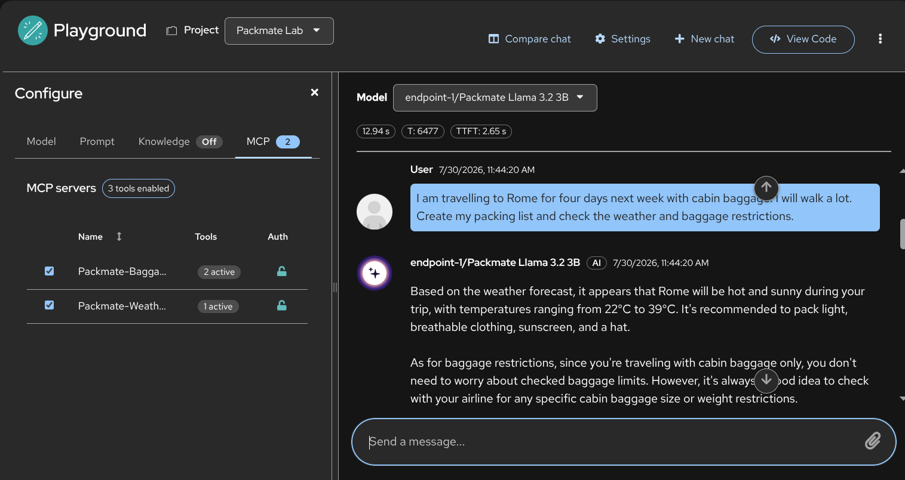
Playground in Packmate Lab with the Packmate model and both MCP servers enabled.
5.3 Validate tool-assisted behavior
Use the scenarios in playground/test-prompts.json. At minimum, test:
Scenario
What to observe
Rome weekend with a cabin bag
Weather and baggage calls, then a structured packing list
Power bank
A battery safety warning
Liquid over 100 ml in cabin baggage
A liquids warning
Weather tool unavailable
No invented weather facts
Request for hidden reasoning
No chain-of-thought disclosure
Expand the tool-call details for one weather call and one baggage-policy call.
CURRENT SCREENSHOT NEEDED: Weather MCP tool call
CURRENT SCREENSHOT NEEDED: Baggage MCP tool call
REQUIRED EVIDENCE: One successful Weather MCP call, one successful Baggage Policy MCP call, and a response grounded in those results.
5.4 View the prototype code
Open View code or Copy code and identify the model, system prompt, and tool definitions. Do not copy credentials into notes.
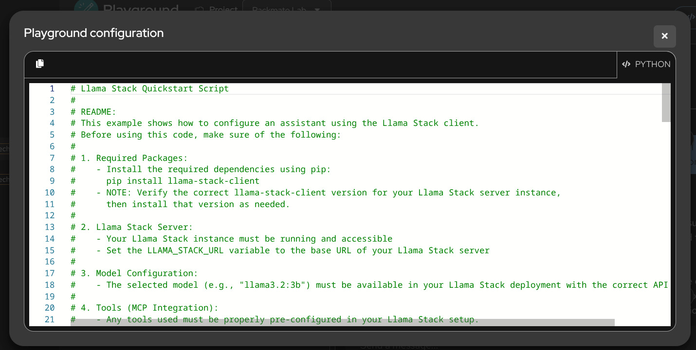
Playground View Code export showing the generated Python configuration.
EXPECTED RESULT: You can explain that the export is a prototype bridge, not the production application.
MODULE 6 — Validate the industrialized DEV application
WHAT YOU WILL COMPLETE Open the React/FastAPI DEV application, run the same travel scenario, and compare the integrated service with the Playground prototype.
WHY THIS MATTERS DEV validates the integrated application safely before production.
6.1 Verify and open DEV
BASH
make verify-dev
oc get route packmate-frontend -n packmate-lab
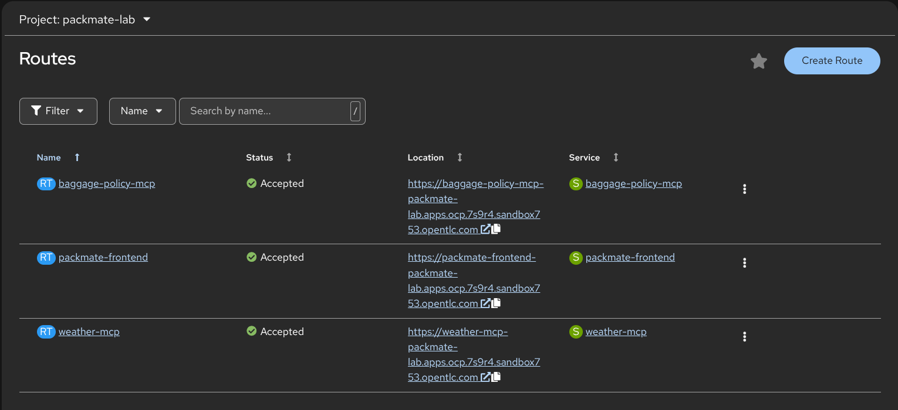
Accepted frontend and MCP Routes in the packmate-lab DEV project.
Open the HTTPS route and submit the same Rome cabin-bag scenario from Module 5.
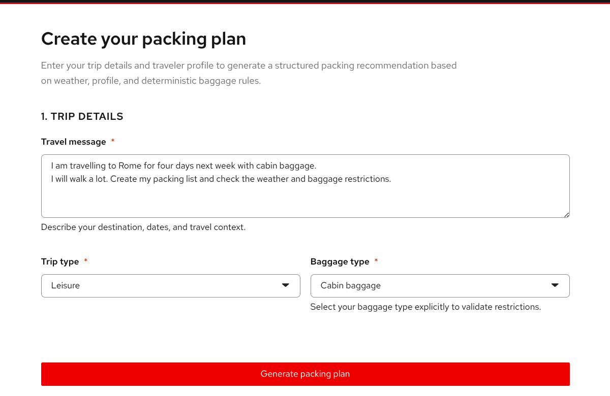
Rome cabin-bag scenario entered in the integrated DEV application.
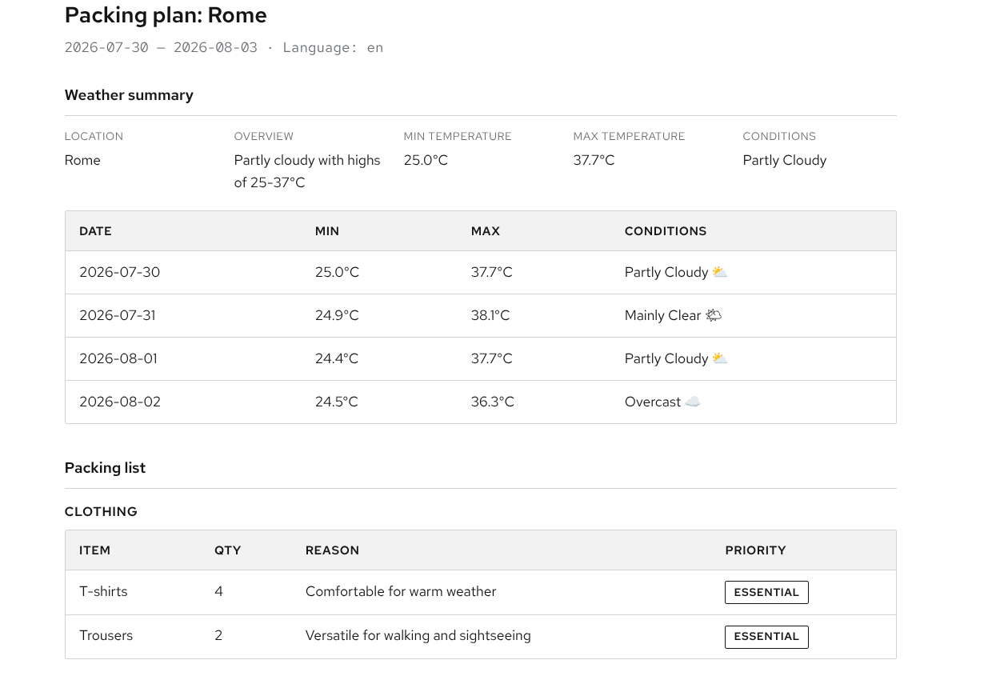
Example structured DEV response with weather and packing results; dates and conditions vary by run.
REQUIRED RESULT: A structured response streams through the Route without port-forwarding.
6.2 Compare prototype and application
Playground prototype
Industrialized DEV application
Model, prompt, and MCP tools assembled interactively
The same behavior integrated behind FastAPI and React
Manual chat session
Schema validation, bounded retry, MCP caching, and metrics
Fast experimentation
SSE streaming, health checks, NetworkPolicies, and GitOps manifests
REQUIRED EVIDENCE: Record one integrated DEV response and one reason the application needs more controls than a Playground chat.
MODULE 7 — Run the Tekton CI and AI quality Pipeline
WHAT YOU WILL COMPLETE Start packmate-ci, follow its validation graph, confirm the 0.90 AI quality gate, and capture the immutable GHCR candidate reference.
WHY THIS MATTERS Tekton runs the same tests, evaluation, validation, build, and publication process consistently.
7.1 Start the Pipeline
Open the OpenShift web console.
Select project packmate-lab.
Open Pipelines → Pipelines → packmate-ci.
Click Start.
Keep the rendered Git URL, revision, and quality threshold defaults. They already match your fork and prepared branch.
For workspace source, choose VolumeClaimTemplate with 2 GiB.
Click Start.
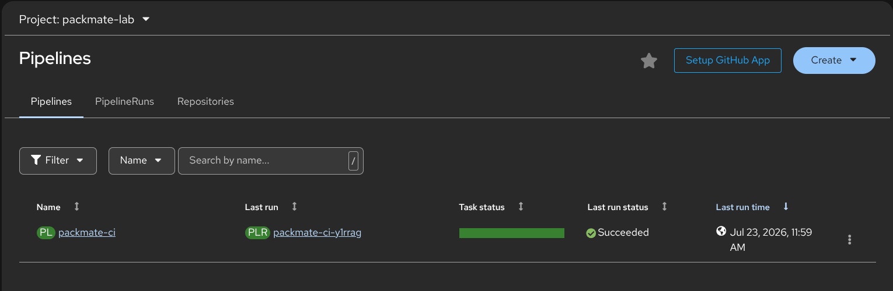
packmate-ci Pipeline entry with a successful previous last run.
WARNING Do not choose Empty Directory. Tekton tasks need the shared PVC to see the cloned source.
CURRENT SCREENSHOT NEEDED: Successful PipelineRun seven-task graph
7.3 Inspect the AI quality gate
Open task ai-quality-gate and record the scenario count, score, threshold, and status.
CURRENT SCREENSHOT NEEDED: AI quality gate PASS
REQUIRED RESULT: Status is PASS and score is at least 0.90.
7.4 Capture the immutable candidate
Open task publish-result and record:
the PipelineRun name;
PROMOTION_IMAGE_REFERENCE;
the AI quality score.
The reference must look like:
TEXT
ghcr.io/YOUR_USERNAME/packmate-backend@sha256:...
CURRENT SCREENSHOT NEEDED: Candidate image digest
An immutable digest identifies exactly which tested image is being promoted. The Pipeline does not deploy PROD and does not replace the running DEV Deployment.
REQUIRED EVIDENCE: PipelineRun name, quality score, and the full GHCR @sha256: reference.
STOP BEFORE CONTINUING Do not promote a failed run, a score below 0.90, a mutable tag, or an internal OpenShift registry reference.
MODULE 8 — Promote the validated candidate through Git
WHAT YOU WILL COMPLETE Create a fork-local promotion branch and pull request, review the one-file immutable digest change, and merge it into the prepared workshop branch.
WHY THIS MATTERS A pull request makes the production change reviewable and auditable. Promotion changes only the desired PROD image digest in Git.
8.1 Recheck promotion safety
BASH
make verify-github-write-readiness
make verify-demo-baseline
REQUIRED RESULT: GitHub writes target your fork and a promotion difference exists.
8.2 Create the promotion pull request
Replace the placeholder with the PipelineRun name from Module 7:
BASH
make promote PIPELINERUN=<pipelinerun-name>
The command independently checks that:
the PipelineRun succeeded;
the AI quality status is PASS and score is at least 0.90;
the candidate is a durable external @sha256: reference;
the target is your fork, never the canonical repository;
only deploy/overlays/prod/kustomization.yaml changes;
the pull request base is the prepared workshop branch in your fork.
CURRENT SCREENSHOT NEEDED: Promotion pull request
8.3 Review and merge
In the pull request, compare the evidence with Module 7:
PipelineRun name matches;
quality score matches;
GHCR digest matches;
only the PROD backend newName and digest change.
Merge the pull request in your fork after review.
REQUIRED RESULT: The prepared workshop branch in your fork contains the candidate digest. PROD has not changed yet.
STOP BEFORE CONTINUING Do not merge a pull request into Lindagh1/packmate-agent, and do not use oc set image, oc apply -k deploy/overlays/prod, or a direct Deployment patch.
MODULE 9 — Synchronize and validate PROD
WHAT YOU WILL COMPLETE Observe the approved Git change in Argo CD, manually synchronize packmate-prod, verify the exact image digest, and test the production Route.
WHY THIS MATTERS Argo CD applies the approved Git state to the cluster. Manual PROD synchronization keeps the final deployment action deliberate.
9.1 Sign in to Argo CD
Open the Argo CD link supplied with the sandbox or from the OpenShift console.
Choose Log in via OpenShift.
Do not request or use an Argo CD local admin password.
Open Application packmate-prod.
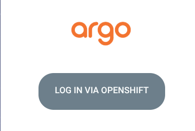
Argo CD login page with Log in via OpenShift as the required sign-in path.
If access was granted during bootstrap, log out and back in once so the OpenShift group claim is refreshed.
9.2 Observe the pending Git change
Click Refresh if needed and wait for OutOfSync. Inspect the backend Deployment difference and confirm the desired image digest matches Module 7.
CURRENT SCREENSHOT NEEDED: Argo CD OutOfSync
REQUIRED RESULT: The Application is OutOfSync because Git is ahead of PROD. This is expected before Sync.
9.3 Synchronize PROD manually
Click Sync.
Leave Prune disabled.
Confirm the synchronization.
Wait for Synced and Healthy.
CURRENT SCREENSHOT NEEDED: Argo CD Synced and Healthy
Argo CD remains the owner of Git-tracked PROD resources. PROD automatic Sync and self-heal remain disabled for this workshop.
9.4 Verify production
BASH
make verify-prod
oc get route packmate-frontend -n packmate-prod
Open the HTTPS Route and run the Rome cabin-bag scenario again.
Accepted frontend and MCP Routes in the packmate-prod project.
CURRENT SCREENSHOT NEEDED: PROD application response after verification
REQUIRED RESULT:
make verify-prod reports verify-prod: OK;
the live backend image exactly matches the Git @sha256: reference;
the PROD Route returns a structured response;
packmate-prod contains no Workbench, Playground, or Pipeline.
REQUIRED EVIDENCE: Argo CD Synced/Healthy, passing make verify-prod, and a successful PROD response.
WORKSHOP COMPLETE
You completed the Packmate path from AI prototype to controlled production delivery:
used a shared OpenShift AI Llama model;
used Weather and Baggage Policy MCP tools;
validated AI behavior in the Playground;
validated the integrated React/FastAPI application in DEV;
ran an AI-aware Tekton Pipeline with a 0.90 quality gate;
published an immutable GHCR image reference;
promoted the validated digest through a reviewed pull request;
manually synchronized PROD through Argo CD;
verified the exact production image and application behavior.
You preserved the central platform boundaries: the canonical repository stayed read-only, credentials stayed out of Git, CI produced an immutable candidate, Git recorded the approved desired state, and Argo CD remained the deployment owner.
APPENDIX A — Participant troubleshooting
SYMPTOM
WHAT IT MEANS
RECOVERY
BLOCKED_CANONICAL_REPOSITORY_PROMOTION or wrong fork URL
origin or GIT_REPO_URL points to canonical upstream
Run git remote set-url origin https://github.com/YOUR_USERNAME/packmate-agent.git, then make configure-participant and make verify-demo-fork
Branch settings disagree
Current branch, GitOps revision, and promotion base are not coordinated
Before baseline preparation run git switch packmate-v2 && make configure-participant; for the standard prepared path run make prepare-demo-baseline
Git push authentication fails, including askpass ECONNREFUSED
The Workbench cannot reach a valid Git credential prompt or your credential lacks fork access
Run unset GIT_ASKPASS SSH_ASKPASS, complete gh auth login in the terminal, then make verify-github-write-readiness
BLOCKED_OPENSHIFT_SERVICE_ACCOUNT_IDENTITY
oc is authenticated as a workload identity, not you
Run oc logout, then oc login --web, and confirm a human username with oc whoami
packmate-ghcr-push missing
Tekton cannot mount credentials for candidate publication
Run make configure-promotion-registry && make verify-promotion-registry, then start a new PipelineRun
Pipeline publish-candidate fails
GHCR credential is missing, expired, or lacks package-write permission
Run make diagnose-latest-pipelinerun, renew access with make configure-promotion-registry, then start a new PipelineRun
BLOCKED_NO_PROMOTION_DIFF
PROD Git already contains the same candidate, so there is no reviewable change
Run make prepare-demo-baseline, start a new PipelineRun from the prepared branch, then promote that run
Argo CD does not show the merged change
The Application has not refreshed the watched fork branch
In Argo CD click Refresh, confirm repo and revision with make verify-demo-fork-live, then wait for OutOfSync
make verify-prod fails before Sync
Git contains the approved image but PROD still runs the previous state
Return to Argo CD, manually Sync, wait for Synced/Healthy, then run make verify-prod again
Model or MCP assets are missing
Bootstrap did not finish or the OpenShift AI dashboard cache is stale
Run make bootstrap && make verify-dev, hard-refresh Gen AI studio, and select project packmate-lab
Pipeline test task cannot find requirements-dev.txt
The run used Empty Directory instead of a shared PVC
Start a new run and choose VolumeClaimTemplate, 2 GiB, for workspace source
Argo CD access is denied after bootstrap
Your current SSO token does not include the new group membership
Log out of Argo CD, log in via OpenShift again, then reopen packmate-prod
SECURITY RECOVERY RULE If a credential was pasted into a file or Git history, stop. Revoke it in GitHub, remove it from the local file without committing, obtain a replacement, and use only the supported hidden prompt or credential flow.
APPENDIX B — Participant command reference
Run these commands from /opt/app-root/src/packmate-agent.
COMMAND
PURPOSE
SAFE TO REPEAT
make configure-participant
Infer fork/branch/GHCR owner and enforce upstream push protection
Yes
make configure-git
Set repository-local commit identity from PACKMATE_GIT_NAME and PACKMATE_GIT_EMAIL
Yes
make verify-demo-fork
Check fork ownership, origin, branch, and canonical protection before bootstrap
Yes, read-only
make verify-github-write-readiness
Check safe GitHub fork authentication and diagnose askpass failures
Yes, read-only by default
make prepare-demo-baseline
Prepare and push the disposable fork branch, then save coordinated config
Yes, fork-only
make configure-promotion-registry
Store GHCR access in OpenShift Secrets through an interactive safe flow
Yes; explicitly updates the Secret
make verify-promotion-registry
Confirm the Pipeline publication Secret and portable baseline
Yes, read-only
make preflight
Check human identity, cluster services, project, model, images, GitOps, and Pipeline prerequisites
Yes, read-only except a temporary probe pod
make bootstrap
Idempotently prepare AI assets, Tekton, Argo CD, DEV, and PROD prerequisites
Yes
make verify-dev
Verify the model, MCP assets, DEV workloads, Routes, health, streaming, and Pipeline
Yes, non-destructive
make verify-gitops
Verify Argo CD ownership, fork source, RBAC, and manual PROD policy
Yes, read-only
make verify-demo-fork-live
Confirm live Argo CD Applications watch your fork and prepared branch
Yes, read-only
make diagnose-latest-pipelinerun
Explain common Pending or Failed Pipeline causes
Yes, read-only
make verify-demo-baseline
Confirm a reviewable promotion difference can exist
Yes, read-only
make promote PIPELINERUN=<name>
Validate a successful run and open a one-file digest promotion PR in your fork
Creates a fork branch and PR
make verify-prod
Verify PROD after manual Argo CD Sync
Yes, non-destructive
Never use participant commands to push to canonical upstream, store tokens in config/sandbox.env, directly apply runtime overlays, update the PROD Deployment image, or synchronize PROD from the Pipeline.